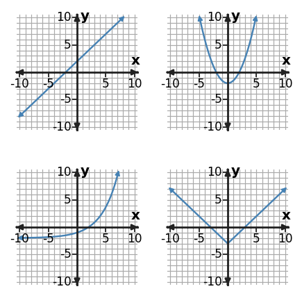
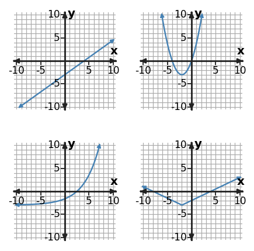
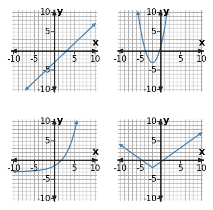

Learning Target
Students will identify common function families from graphs, equations, tables, and contexts.
- I can construct evidence for a function family using patterns in graphs, equations, tables, and contexts.
- I can apply family features to sort representations into linear, quadratic, exponential, absolute value, and other familiar forms.
- I can determine which representation gives the strongest evidence for a function family when features seem similar.
Vocabulary / Key Notation Preview
- parent function
- linear
- quadratic
- exponential
- absolute value
Sort the vocabulary. Write each vocabulary word in the column that best matches what you know right now. You may move a word later.
| Know for sure | Recognize | Don't know yet |
|---|---|---|
What's to Come
DO NOT SOLVE IT YET. Circle anything familiar, underline symbols, labels, conditions, data, or features that seem important, and write short notes about what you think may matter later.
Two mystery relationships A and B are shown in the table, and four familiar family graphs are shown below. Without using formal family tests, describe what stays predictable as x increases, choose a likely family for A and B, and name one graph feature you would look for to check each prediction.
| x | A | B |
|---|---|---|
| 0 | 2 | 1 |
| 1 | 5 | 2 |
| 2 | 8 | 4 |
| 3 | 11 | 8 |

Let's Get Started
Skim the section. Record what catches your attention before you read closely.
| What I noticed | |
|---|---|
| What I predict | |
| What I wonder |
READ IN SHORT CHUNKS. Annotate the words and visuals together. Underline evidence, circle or highlight bold vocabulary, label arrows, measurements, or important features, connect sentences to figures, and jot short questions or connections in the margins.
I can construct evidence for a function family using patterns in graphs, equations, tables, and contexts.
A function family is a group of relationships that share a recognizable structure. A parent function is a simple representative of a family, and other functions in the family keep important features even when their location or scale changes. In Algebra 1, four especially useful families are linear, quadratic, exponential, and absolute value. The goal is not to memorize one picture for each family; it is to collect evidence from several representations.
Tables give exact numerical evidence. A linear table has a constant first difference when the input increases by equal steps. A quadratic table has constant second differences, while an exponential table has a constant multiplicative ratio when the outputs are nonzero and the inputs increase evenly. An absolute-value table often shows mirrored outputs around a center and linear change on each side of that center.
Equations and graphs provide different kinds of evidence. A linear equation has a first-power variable and its graph is a line; a quadratic includes an $x^2$ term and has a parabola; an exponential places the variable in an exponent; an absolute-value rule contains bars such as $|x-h|$ and makes two linear arms meeting at a vertex. Strong classification uses the representation that reveals the structure most clearly and checks that the other representations agree.
- What table pattern is evidence for a linear family?
- What equation feature is strong evidence for an exponential family?
- Why is using two representations usually stronger than classifying from a graph alone?
| Family | Equation clue | Table clue | Graph clue |
|---|---|---|---|
| Linear | $y=mx+b$ | constant 1st difference | line |
| Quadratic | $y=ax^2+bx+c$ | constant 2nd difference | parabola |
| Exponential | $y=ab^x$ | constant ratio | multiplicative curve |
| Absolute value | $y=a|x-h|+k$ | mirror pattern about a center | V-shape with a corner |
Use the clue that is most exact for the information you have, then check another representation when possible.
Example 1
Classify the function family represented by $y=3|x-1|+1$. Give one feature of the equation that supports your classification.
You Try It 1
Classify the function family represented by the table using the strongest numerical pattern in the values as evidence.
| x | y |
|---|---|
| -1 | 4 |
| 0 | 2 |
| 1 | 0 |
| 2 | 2 |
| 3 | 4 |
Example 2
Classify the function family represented by the table using the strongest numerical pattern in the values as evidence.
| x | y |
|---|---|
| 0 | 2 |
| 1 | 5 |
| 2 | 8 |
| 3 | 11 |
You Try It 2
In the graph gallery, which position shows the exponential family? State one visible feature that distinguishes it from the linear graph.

I can apply family features to sort representations into linear, quadratic, exponential, absolute value, and other familiar forms.
Sorting representations by family works best when you focus on defining features instead of surface appearance. A straight graph strongly supports a linear family, a smooth U-shaped or upside-down U-shaped curve supports a quadratic family, a curve with multiplicative growth or decay supports an exponential family, and a sharp V or upside-down V supports an absolute-value family. Those visual cues are useful, but they are strongest when supported by an equation or table pattern.
The same family can look different after changes in position or scale. A steep line and a shallow line are still linear; a narrow parabola and a wide parabola are still quadratic; an exponential curve can grow or decay; an absolute-value graph can be shifted or reflected. Family membership depends on mathematical structure, not on one exact size, location, or orientation.
When two families share a visible feature, ask what feature is actually diagnostic. Quadratic and absolute-value graphs can both be symmetric and have a lowest point, but the quadratic has smooth curvature while the absolute-value graph has a corner. A small graph window can make an exponential curve look almost linear, but a constant ratio in a table identifies the multiplicative structure. Sorting is therefore a process of matching evidence to the feature that matters.
- What visible feature separates an absolute-value graph from a quadratic graph when both have a minimum?
- Why can two graphs from the same family look very different?
- A graph looks nearly straight, but its table has a constant ratio. Which evidence should lead the classification, and why?
$y=(x-2)^2+1$ and $y=4(x+3)^2-5$ are both quadratic.
Position and width can change while smooth parabolic shape remains.
Equal input steps still produce constant second differences.
A family describes the pattern of change, not one fixed picture.
Example 3
The four graphs below show familiar function families. Identify the family in the top-left, top-right, bottom-left, and bottom-right positions, in that order.

You Try It 3
A table has a constant ratio of 4, but the first few plotted points look almost collinear in a small graph window. Classify the family using the stronger evidence.
Example 4
An equation has the form $y=3|x-2|+1$ while a low-resolution graph looks like two nearly straight pieces. Identify the family and name the decisive evidence.
You Try It 4
Classify the function family represented by $y=2\left(3\right)^x$. Give one feature of the equation that supports your classification.
I can determine which representation gives the strongest evidence for a function family when features seem similar.
Not all evidence has equal strength. Exact symbolic structure or a clear numerical pattern can be more decisive than a graph viewed in a narrow window. For example, constant second differences are exact evidence of quadratic behavior for evenly spaced inputs, even if a cropped graph shows only one side of a parabola. Likewise, an equation with absolute-value bars identifies its family even when the graph is too small to show the corner clearly.
Graphs remain valuable because they reveal global behavior: direction, symmetry, turning points, intercepts, and how quickly a relationship changes. But scale can hide these features. A table may reveal a ratio that is hard to see on a graph, while an equation may reveal a family structure that is tedious to infer from several points. The best representation depends on the question and the quality of the available information.
A strong mathematical claim names both the family and the evidence. Instead of saying “it looks quadratic,” say “the table has constant second differences, so quadratic is the strongest classification.” If another representation seems to disagree, do not ignore it; check whether the window, scale, limited data, or interpretation explains the conflict. Classification is an evidence argument, not a guess from appearance.
- Name one reason a graph window can give weak family evidence.
- What does constant second difference tell you for evenly spaced inputs?
- What should you do when a graph and a table seem to suggest different families?
| Evidence | What it can reveal | Possible limitation |
|---|---|---|
| Equation | exact symbolic family structure | may need rewriting to make structure obvious |
| Table | differences, ratios, symmetry | depends on enough well-spaced data |
| Graph | shape and global features | window and scale can mislead |
When evidence conflicts, explain why one source is more decisive instead of simply choosing the one you noticed first.
Example 5
Classify the function family represented by $y=|x-2|-1$. Give one feature of the equation that supports your classification.
You Try It 5
Use the table to decide which pattern is strongest evidence for the family.
| x | y |
|---|---|
| -2 | 6 |
| -1 | 1 |
| 0 | -2 |
| 1 | -3 |
| 2 | -2 |
Example 6
A table has constant second differences, while a cropped graph shows only one increasing side of the relationship. Which evidence is more decisive for the function family, and what family does it support?
You Try It 6
In the graph gallery, the top-right and bottom-right graphs are both symmetric and have a lowest point. What visible feature best distinguishes the two families?

Summary
- Function families can be identified from equation structure, table patterns, graph features, and context behavior.
- Linear relationships show constant first differences; quadratic relationships show constant second differences; exponential relationships show constant ratios.
- Absolute-value relationships have two linear arms meeting at a vertex and can show mirrored table values.
- Strong classification names the family and the evidence, using the most diagnostic representation when features are ambiguous.
Common Mistakes
| Watch for... | Correct it by... |
|---|---|
| Choosing a family from one surface feature while ignoring conflicting table or equation evidence. | |
| Treating every curved graph as quadratic or every nearly straight graph as linear without checking scale and numerical structure. |